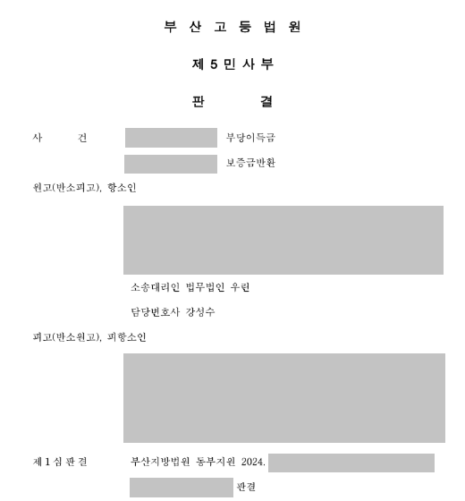

핵심 결과
민사소송 1심에서 패소했다고 해서 모든 것이 끝난 것은 아닙니다.
다만 항소심은 1심과 같은 주장을 반복하는 절차가 아닙니다.
1심이 놓친 사실관계와 법리를 찾아내야 합니다.
이번 사건은 복잡한 계약서와 약정 문서 때문에 1심에서 의뢰인이 전면 패소한 사건이었습니다.
법무법인 우린은 항소심에서 계약 구조와 증거의 의미를 다시 정리했습니다.
그 결과 1심 판결 흐름을 뒤집고 청구금액 약 80% 인정, 상대방 반소는 전부 기각되는 결과를 이끌어냈습니다.
| 구분 | 내용 |
|---|---|
| 사건 분야 | 민사소송, 계약분쟁 |
| 초기 결과 | 1심 전면 패소 |
| 주요 쟁점 | 계약서 해석, 약정 문서 우선순위, 증거의 법리 연결 |
| 항소심 대응 | 사실관계 재구성, 계약 조항 재해석, 핵심 증거 재정리 |
| 최종 결과 | 청구금액 약 80% 인정, 상대방 반소 기각 |
사건 개요
의뢰인은 1심에서 패소한 뒤 상담을 요청했습니다.
사건 기록을 확인해 보니 계약관계가 매우 복잡했습니다.
계약서와 약정 문서가 여러 개 있었고, 각 문서의 의미가 제대로 정리되지 않은 상태였습니다.
1심에서는 핵심 증거가 법리와 연결되지 못했습니다.
그 결과 의뢰인은 전면 패소 판결을 받았습니다.
1심에서 불리했던 이유
- 계약서와 약정 문서가 복잡하게 얽혀 있었습니다.
- 각 조항의 우선순위가 명확히 정리되지 않았습니다.
- 중요한 증거가 판결의 핵심 법리와 연결되지 못했습니다.
- 의뢰인의 손해 구조가 재판부에 충분히 전달되지 않았습니다.
좋은 증거가 있어도 법리와 연결되지 않으면 재판에서는 힘을 갖기 어렵습니다.
민사 항소심에서 중요한 점
항소심은 단순히 1심을 다시 반복하는 재판이 아닙니다.
1심에서 왜 졌는지를 먼저 찾아야 합니다.
그리고 항소심 재판부가 다르게 볼 수 있는 구조를 만들어야 합니다.
| 항소심 검토 항목 | 확인할 내용 |
|---|---|
| 1심 패소 이유 | 재판부가 어떤 부분을 받아들이지 않았는지 |
| 계약서 문구 | 문언과 실제 거래 경위가 맞는지 |
| 증거의 위치 | 증거가 어떤 법리와 연결되는지 |
| 상대방 주장 | 반박 가능한 논리적 약점이 있는지 |
| 새로운 구성 | 항소심에서 다르게 볼 수 있는 쟁점이 있는지 |
항소심은 “다시 보는 재판”이 아니라 “다르게 보이게 만드는 재판”이어야 합니다.
해결 전략
1. 사실관계를 원점에서 다시 정리했습니다
의뢰인과 사건의 시작부터 다시 확인했습니다.
계약을 체결하게 된 경위, 약정 문서가 작성된 순서, 당시 당사자들의 의사를 세밀하게 정리했습니다.
이 과정에서 1심에서 충분히 조명되지 않았던 기록들이 의미를 갖기 시작했습니다.
2. 복잡한 계약서를 법리적으로 재해석했습니다
계약서 문구만 단순히 읽어서는 부족했습니다.
각 조항이 어떤 순서로 적용되어야 하는지, 어떤 문서가 우선하는지 체계적으로 정리했습니다.
항소심 재판부가 사건을 새롭게 볼 수 있도록 계약 구조를 다시 설명했습니다.
3. 1심에서 무시된 증거를 핵심 증거로 재배치했습니다
1심에서 크게 다뤄지지 않았던 증거가 있었습니다.
단독으로 보면 약해 보였지만, 계약 구조와 함께 보면 판결을 바꿀 수 있는 자료였습니다.
그 증거를 전체 법리 구조 안에 배치해 1심 판단의 논리적 빈틈을 설명했습니다.
| 대응 단계 | 실제 진행 내용 |
|---|---|
| 1단계 | 1심 판결문과 패소 이유 분석 |
| 2단계 | 계약서와 약정 문서 작성 경위 재정리 |
| 3단계 | 각 조항의 우선순위와 해석 방향 정리 |
| 4단계 | 1심에서 배척된 증거의 의미 재구성 |
| 5단계 | 상대방 반소 주장에 대한 반박 구조 작성 |
| 6단계 | 항소심 재판부 설득을 위한 준비서면 제출 |
결과
항소심 재판부는 1심과 다른 판단을 했습니다.
의뢰인의 주장이 상당 부분 받아들여졌습니다.
청구금액 중 약 80%가 인정되었습니다.
상대방이 제기한 반소는 전부 기각되었습니다.
최종 결과
1심에서 전면 패소했던 민사소송 사건이 항소심에서 뒤집혔습니다.
의뢰인의 청구금액 중 약 80%가 인정되었고, 상대방의 반소는 전부 기각되었습니다.
민사소송 항소심에서 조심해야 할 점
1심에서 졌다고 해서 항소장만 제출하면 결과가 바뀌는 것은 아닙니다.
항소심에서는 왜 1심 판단이 잘못되었는지 구체적으로 보여줘야 합니다.
계약서 문구, 거래 경위, 증거의 의미, 상대방 주장의 모순을 다시 구성해야 합니다.
특히 계약분쟁은 문서 하나와 단어 하나가 결과를 바꿀 수 있습니다.
그래서 항소심은 더 촘촘한 분석이 필요합니다.
결론
민사소송 1심 패소는 끝이 아닙니다.
하지만 항소심에서 이기려면 1심과 같은 방식으로 접근해서는 안 됩니다.
사실관계와 증거, 계약 조항, 법리를 새롭게 연결해야 합니다.
사무장·상담실장 없이 변호사가 직접 상담합니다
민사 항소심은 기록 분석이 핵심입니다.
법무법인 우린은 강성수 변호사가 직접 1심 판결문과 증거기록을 검토하고, 항소심에서 다르게 볼 수 있는 쟁점을 찾습니다.
1심 패소로 고민 중이라면 먼저 판결문과 주요 계약서를 정확히 확인해야 합니다.
이 글은 일반적인 법률 정보 제공을 위한 자료이며, 개별 사건의 결과를 보장하지 않습니다. 구체적인 대응은 사실관계와 증거에 따라 달라질 수 있습니다.